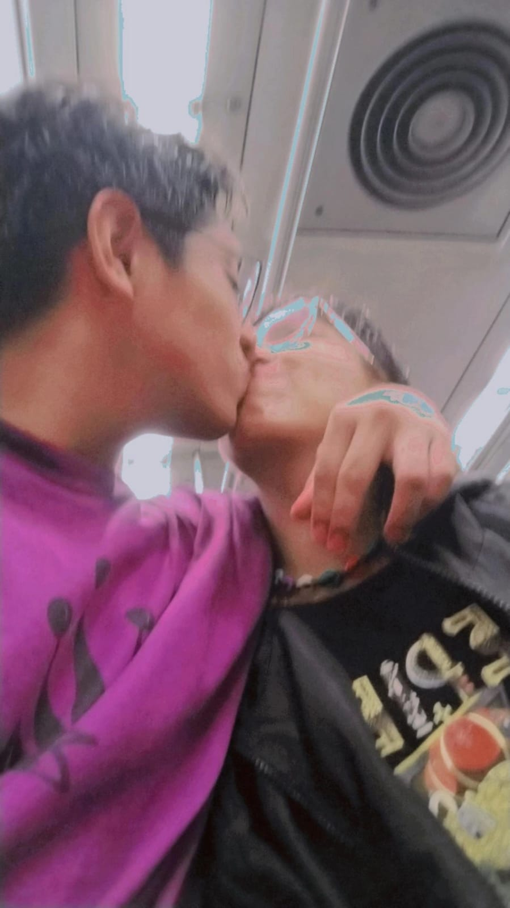
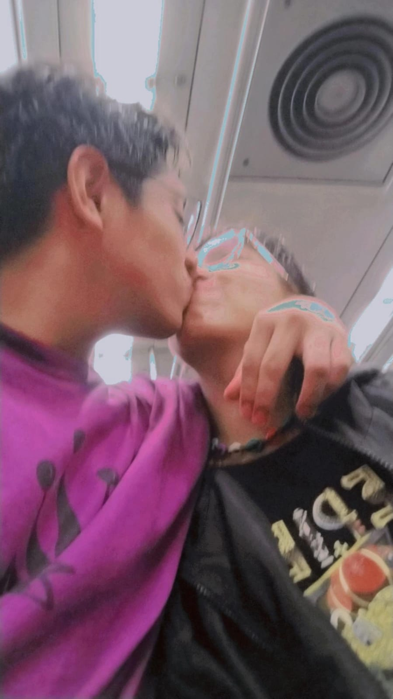

Hola mi amor! 💖
Gracias por aceptar estar conmigo un año más mi Thany. Espero que sean muchos más y podamos disfrutar de esta vida juntos, que no importe el camino difícil ni las adversidades.
Espero ser la mejor versión de mí para ti, y creo que tú quieres lo mismo. Aunque hemos vivido momentos difíciles y estuvimos a punto de tomar decisiones incorrectas, ambos hemos madurado juntos y hemos podido crecer de igual manera.
Aunque no soy bueno con las palabras, me gusta dedicarte mis textos cada que puedo. Es un sentimiento muy lindo el escribirte mientras pienso en tu reacción. Muchas gracias por compartir estos años de tu vida conmigo, cielo.
Y aunque no lo quieras aceptar, me enorgullece ver tus avances, tus logros y cómo te levantas una y otra vez. Sé que te puede parecer cansado, pero yo lo veo en ti: tienes esa chispa, esa motivación de seguir adelante, y por esto te admiro muchísimo. Eres una gran persona, un excelente novio/novia, pareja, compañero/a de vida... Para todo eres excelente, y eso lo admiro mucho.
No tengo más que decir, solo que...
¡TE AMO! ❤️

 
